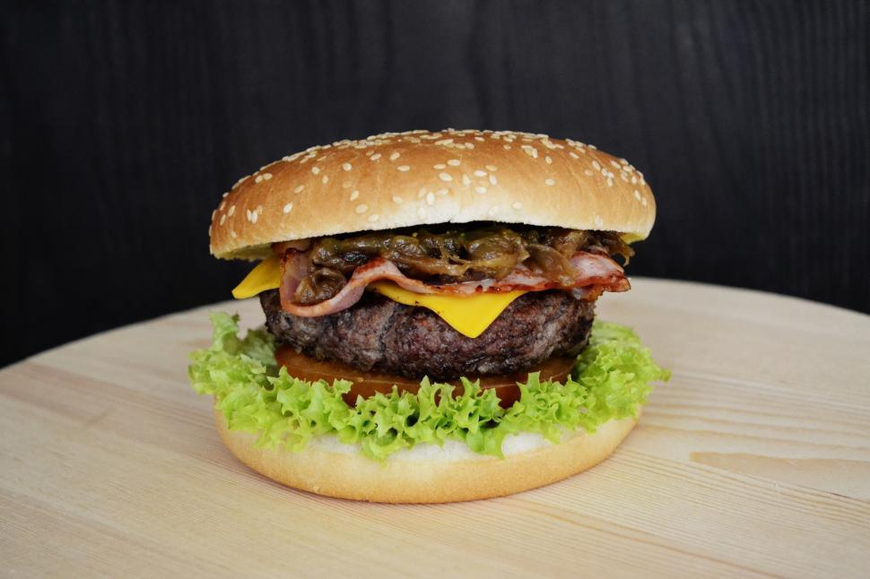

Cheesy Bacon Ranch Burger Sliders
Home

Description
These cheesy bacon ranch burger sliders are essentially grilled bacon Cheddar burgers with a double hit of ranch. They're dressed with a hot sauce-ranch combo and ranch seasoning flavors the beef.
Ingredients
- 1/2 cup ranch dressing
- 1 tablespoon hot sauce, or to taste
- 1 1/2 pounds ground beef
- 1 tablespoon ranch seasoning
- 1/4 teaspoon salt
- 1/2 teaspoon freshly ground black pepper
- 8 slices bacon
- 1 (12 count) package Hawaiian rolls
- 8 slices Cheddar cheese
- 1/4 cup diced red onion
- 12 dill pickle slices
Steps
- Stir together ranch dressing and hot sauce in a small bowl and set aside. Mix beef with ranch seasoning, salt, and pepper in a large bowl and shape meat mixture into 2 large rectangular shapes, about 7 inches by 5 inches each.
- Place bacon in a large skillet and cook over medium-high heat, turning occasionally, until evenly browned, about 10 minutes. Drain bacon slices on paper towels; chop bacon when cool enough to handle.
- Preheat an outdoor grill for medium-high heat. Slice rolls in half horizontally, keeping tops and bottom pieces connected. Place rolls on grill, cut side down, and cook just until toasted, about 10 seconds. Remove and set aside.
- Add burger patties to grill and cook, undisturbed, until browned, about 4 minutes. Flip and cook until browned and to your preferred doneness, about 4 minutes more. Top each patty with 4 slices cheese and cover grill just untiul cheese is melted, about 1 minute.
- Spread bottom halves of rolls with half of ranch dressing mixture. Place burgers on top and then top with chopped bacon, onion, and pickle slices. Drizzle with desired amount of remaining dressing and place bun tops on top. Cut into 12 sliders and serve.